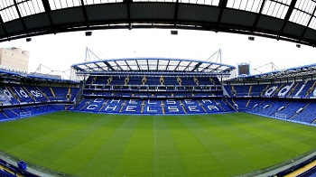

Historia
El Chelsea Football Club, conocido simplemente como Chelsea, es un club de fútbol profesional de Inglaterra con sede en el distrito de Fulham (Londres), que disputa actualmente la Premier League, máxima competición futbolística de ese país. Fundado el 10 de marzo de 1905, el club se mantuvo la mayor parte de su historia en la máxima categoría del fútbol británico. Su estadio es el Stamford Bridge, el cual tiene una capacidad para 41 837 espectadores, y en el que ha disputado sus encuentros como local desde su fundación.
Escudo
Titulo |
Cantidad |
| Uefa Champios League | 1 |
| Premier League | 6 |
| FA CUP | 7 |
| Mundial de clubes | 0 |
| Supercopa de Inglaterra | 4 |
| Supercopa de europa | 1 |
Estadio
Tecnico
Capitan